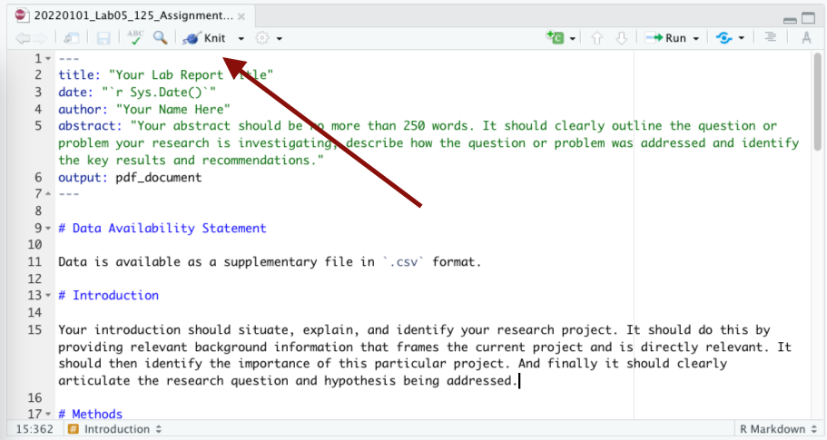

Assignment Template
You will use the following template for your Registered Report:
20220824_Lab03_205_Assignment_V1.Rmd
Before starting your Registered Report, we’ll spend some time going through the different parts of this template.
Using the Template
All the markdown syntax that you need for RMarkdown can be found in the Markdown section of the BIOL Procedures and Guidelines.
Directory Structure & File Naming
It is expected that you will have a root project folder for your work associated with this lab. And that at the minimum you will have a folder for your report, your data, and your figures. And that you will download this template into your report/ directory. And that lastly, you will rename the template in accordance with the file naming conventions in the Biology Procedures and Guidelines document.
This structure and hierarchy will be important when it comes time to include figures and images in your report.
YAML
The top of the template contains some front matter called YAML. YAML provides instructions to all the pieces of software involved in converting your RMarkdown document to it's outputs, in this case, pdf. YAML is very specific to spacing, so don't add any extra spaces!
What you need to do.
- Provide a title within the quotations after
title. - Provide your name within the quotations after
author. - Provide your abstract within the quotations after
abstract.
What might be nice to know.
r Sys.Date()pulls the date from your computer and auto populates this for you.- The
outputtag defines the output format. Other options includehtml_documentandword_document.
What exactly is YAML?
YAML™ (rhymes with “camel”) is a human-friendly, cross language, Unicode based data serialization language designed around the common native data types of dynamic programming languages. It is broadly useful for programming needs ranging from configuration files to internet messaging to object persistence to data auditing and visualization.
Read more at the Official YAML Web Site
Document Body
The template is then pre-populated with first level headers for each section you're expected to include in your report. Each heading re-iterates the key elements the content of these headings should address. This is just place holder text, so replace it with your own.
Images & Graphs
There is one sample graph referenced in the template. If you'd like to download this image and place it in your figures/ directory to test knitting your template, the file can be downloaded at this link. Note how it references the figure to be included ../figures/image-name.png. The ../ means 'go one level up in the directory' which, if you have your project set up in the following way and your .Rmd file is in your report/ directory it means 'look in the root/ directory for a folder called figures/.
├── BIOL205_RP/
│ ├── report/
│ │ ├──20220101_Lab03_205_Assignment_V1.Rmd
│ ├── data/
│ │ ├──figures/MVD_BIOL125-Lab5_Fig-1-Boxplot_V1.pngIf you make a mistake in setting this path, you'll get the following error in RStudio
(No image at path ...)You'll also note the following directly after the image path: {width=50%}. This reduces the image size by 50%.
As noted in the template, you do not need to write Figure 1: before your figures; this small piece of text is handled during the conversion from RMarkdown to pdf. Any other information that you would like to include in the caption should go in the [] before the () that contain the path to the image.
Figure placement
The engine behind the conversion from RMarkdown to pdf is a typesetting application, one with pretty strict rules about how content should be formatted - much more strict than something like Microsoft Word.
What this means is that if the placement of your images will disrupt your prose - by creating large amounts of empty white space for example - this typesetting application will push your figure to somewhere lower in your report where it won't create this white space.
Your figures should be adjacent to the relevant text in your RMarkdown file. How this manifests to your pdf might look a little different; that's ok.
References
Just before the heading for references you'll see the following
\clearpageThis creates a page break between your references section and the rest of your report.
Building the pdf
If you’ve installed R, RStudio, and the markdown and tinytex packages succesfully, when you open the template .Rmd file you should see an option to Knit.

Click this button or select the drop down arrow and select Knit to pdf. This will generate a pdf in the same directory as your .Rmd file.